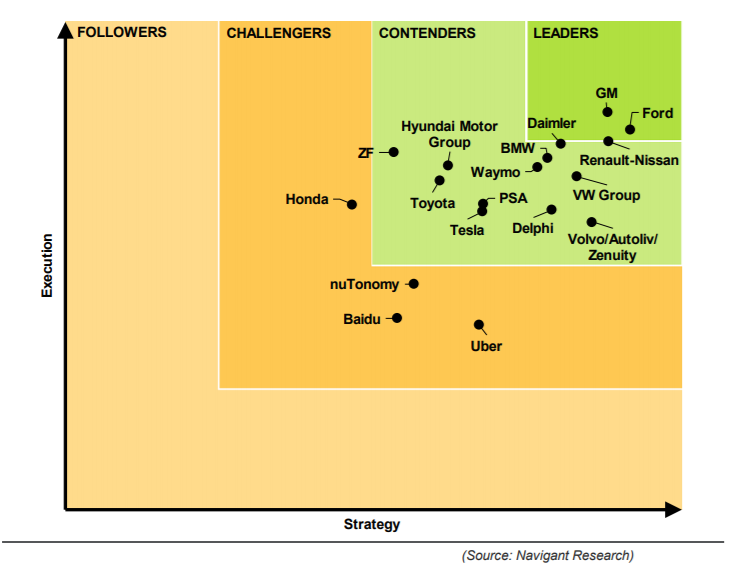
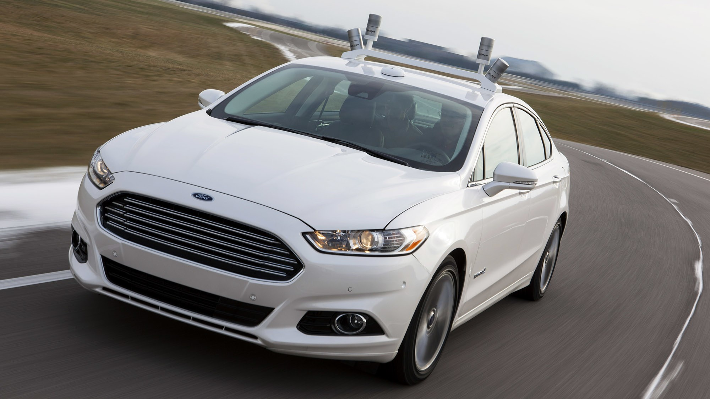
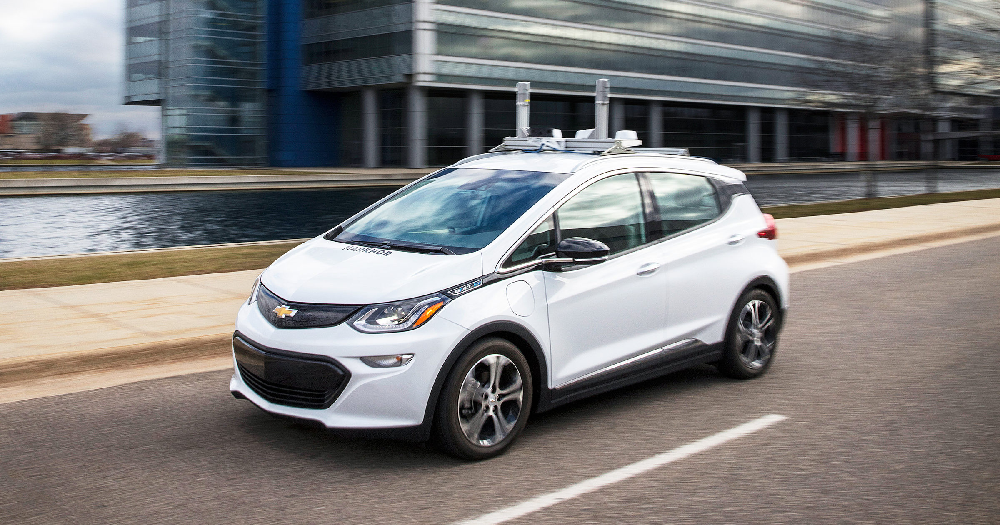
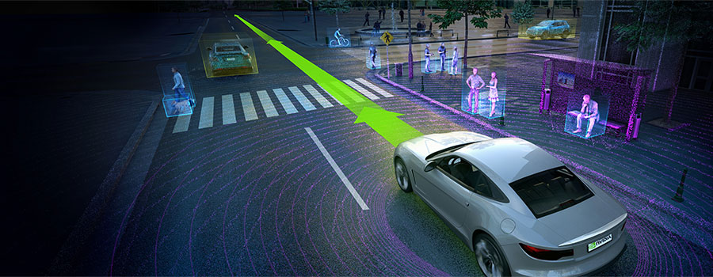
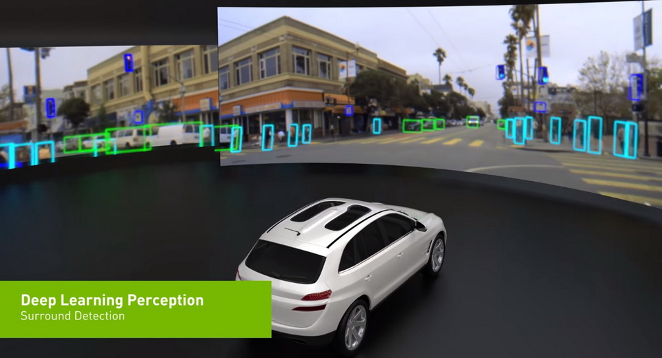

In this section, we'll take a look at three IT companies and two leading automaker companies who are currently working on autonomous car vehicles, based on 2017 Navigant Research on Automated Driving.

Figure 1. Chart that shows current statuses of companies working on autonmous cars (Source: Navigant Research)
This chart made by Navigant Research illustrates each company's score in terms of how established and comprehensive its current deployment of advanced driver assistance systems. The criteria included vision, go-to-market strategy, partners,
technology, products and etc, which means that the research team gave higher scores to companies with potentail of long-term success in developing autonomous car rather than their current status.
Among many companies in this chart, we'll analyse Ford, GM, Waymo and Tesla. In addition to that, we'll also look at Nvidia.
Ford
Overall Score: 85.0
Strategy: 91.5
Execution: 77.9
Ford was an early participant in the Defense Advanced Research Projects Agency (DARPA) Grand Challenge program. In 2012 at the Mobile World Congress in Barcelona, Executive Chairman Bill Ford revealed a long-term plan for fully autonomous
cars arriving in the late-2020s. Ford started to develop and test autonomous cars, while also investing in companies producing supporting technologies and services. Ford invested $150 million in Velodyne, a lidar manufacturer, and invested
$1 billion in Argo AI, a secretive artificial intelligence startup. In 2017, Ford also announced that it will partner with Lyft on self-driving cars. In 2016, Ford announced plans to produce a Level 4 capable automated vehicle in 2021.
[1]

Figure 2. Ford's prototype autonomous car
GM
Overall Score: 84.8
Strategy: 87.9
Execution: 81.6
GM ranked 2 in the Navigant Research because it made many big investements in self-driving cars. GM invested $500 million in Lyft, a ride-hailing provider. GM also acquired self-driving car startup Cruise Automation for $581 million in July
2016, to apply its image recognition technology into GM's autonomous driving system. They developed Chevrolet Bolt EV, which was designed specifically for ride-hailing services, and CEO Mary Barra announced that the company will begin
testing its automated Bolt on Michigan roads. [1]

Figure 3. GM's prototype autonomous car - Bolt EV
Google / Waymo
Overall Score: 73.4
Strategy: 76.6
Execution: 70.2
Unlike Nvidia, Google built their own autonomous cars from scratch. The project was started in 2009, aiming to build a fully-functioning autonomous system that can run 100-mile route. In 2013, Google announced that vehicles with the system
were driven more than 300,000 miles on freeways with test drivers.
Figure 4. Waymo's driveless taxi that will be launched in Arizona. - Bolt EV
In 2015, they revealed a prototype that doesn’t have any steering wheel, pedals and drivers. In 2016, Google’s autonomous car project got larger and became a separate company called ‘Waymo’. And their driverless taxi service will be launched
very soon, starting in Arizona after Arizona’s department of transportation gave Waymo a permit to run a TNC (transportation network company).
[2] [3]
Tesla
Overall Score: 64.5
Strategy: 67.7
Execution: 61.2
All of the Tesla’s cars have autopilot system in them. Tesla’s autopilot feature was first introduced in 2015, which is capable of autonomous driving in limited environments. In 2016, Tesla included new hardwares new hardware that includes
8 surround cameras, 12 ultrasonic sensors, a forward-facing radar with enhanced processing and Nvidia Drive PX 2 GPU for CUDA based computation.
[4] Even though Tesla’s hardwares are capable of fully autonomous driving systems, their self-driving
softwares are far behind from other companies.
Figure 5. Tesla's Autopilot system
Their enhanced autopilot can be used only in highway, and the drivers should put their hands on the wheel while using autopilot. (Which is classified as Level 2 in
autonomy). Unlike the common anticipation that Tesla will make a lead in autonomous car race, Tesla was ranked last out of 19 companies in the recent Navigant Research.
[5]
Nvidia
Nvidia was originally a company that manufactures graphics processing unit (GPU). However, after Nvidia released a parallel computing platform called ‘CUDA’, which allows scientists and researchers to use GPUs
for general purpose processing, it became the most influential company in deep learning (artificial intelligence), data analytics and etc. Since it is nearly impossible and inefficient to explicitly write an autonomous driving system,
most companies uses deep learning to develop a driverless car system.

Figure 6. Nvidia's Nvidia Drive
Nvidia, instead of developing its own autonomous car, decided to release an AI platform for autonomous driving called ‘Nvidia Drive’, which are currently used in over 320 companies including Volkswagen, Mercedes-Benz, Audi, Tesla, Volvo
and Uber.
[2] Many companies' usage of Nvidia's technology implies that self-driving vehicle needs a
huge computing powers, since it uses high resolution 360 degree cameras, lidars and etc, which means that Nvidia will become one of the most influential companies in future autonomous vehicle market.
 Figure 7. Showcase of Nvidia's Nvidia Drive
Read the full version of Navigant Research report
here.